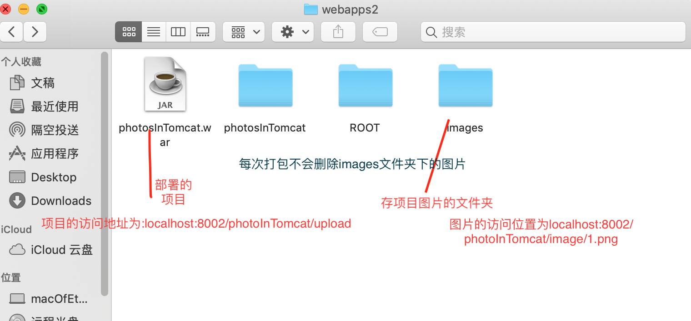

springboot在同一个tomcat下同时打包：dev,prod,test, 对应多个端口运行，以及在本地和tomcat上关于文件部署
1. springboot配置多种运行环境
除了上一篇提到的在pom.xml中动态控制当前运行环境:springboot项目多环境配置, 还可以在applcation.properties中通过:spring.profiles.active=test(dev/prod/test)来控制当前项目的 运行环境：
application.properties:
spring.profiles.active=test
application-dev.properties:
server.port=8001
application-prod.propertis:
server.port=8002
application-test.properties:
server.port=8003
如上:当前项目运行的端口就是8003, 可以通过@Profile("test")来控制那些类、方法
可以被访问到。
注意：8003只是项目本地编译运行的端口，如需要根据端口部署三种环境到本地tomcat, 则需要
配置tomcat的server.xml文件
2. 不同环境部署不同端口的项目到tomcat
1. pom.xml移除springboot web内嵌的tomcat, 并添加新的tomcat依赖, 设置为provided:
<dependency>
<groupId>org.springframework.boot</groupId>
<artifactId>spring-boot-starter-web</artifactId>
<!--移除springboot自身嵌入的tomcat-->
<exclusions>
<exclusion>
<groupId>org.springframework.boot</groupId>
<artifactId>spring-boot-starter-tomcat</artifactId>
</exclusion>
</exclusions>
</dependency>
<dependency>
<groupId>org.springframework.boot</groupId>
<artifactId>spring-boot-starter-tomcat</artifactId>
<scope>provided</scope>
</dependency>
2. 设置打包方式和包名，包名为ROOT时，访问链接可以省略包名:
<packaging>war</packaging>
<build>
<finalName>test</finalName>
<plugins>
<plugin>
<groupId>org.springframework.boot</groupId>
<artifactId>spring-boot-maven-plugin</artifactId>
</plugin>
</plugins>
</build>
3. 初始化springboot tomcat容器:
@EnableSwagger2
@SpringBootApplication
public class DemoApplication extends SpringBootServletInitializer {
public static void main(String[] args) {
SpringApplication.run(DemoApplication.class, args);
}
@Override
protected SpringApplicationBuilder configure(SpringApplicationBuilder builder) {
return builder.sources(DemoApplication.class);
}
}
4. 用mvn clean, mvn package打包，将生成的包放入tomcat的webapps文件夹下。
5. 用同样的方式将dev，prod打包，并在tomcat目录下新建webapps2, webapps3，将dev和
prod包分别放入webapps2, webapps3中。
6. 配置server.xml如下:
<?xml version="1.0" encoding="UTF-8"?>
<Server port="8005" shutdown="SHUTDOWN">
<Listener className="org.apache.catalina.startup.VersionLoggerListener" />
<Listener className="org.apache.catalina.core.AprLifecycleListener" SSLEngine="on" />
<Listener className="org.apache.catalina.core.JreMemoryLeakPreventionListener" />
<Listener className="org.apache.catalina.mbeans.GlobalResourcesLifecycleListener" />
<Listener className="org.apache.catalina.core.ThreadLocalLeakPreventionListener" />
<GlobalNamingResources>
<Resource name="UserDatabase" auth="Container"
type="org.apache.catalina.UserDatabase"
description="User database that can be updated and saved"
factory="org.apache.catalina.users.MemoryUserDatabaseFactory"
pathname="conf/tomcat-users.xml" />
</GlobalNamingResources>
<Service name="Catalina">
<!-- 第一个项目 端口为8001 -->
<Connector port="8001" protocol="HTTP/1.1"
connectionTimeout="20000"
redirectPort="8443" />
<Engine name="Catalina" defaultHost="localhost">
<Realm className="org.apache.catalina.realm.LockOutRealm">
<Realm className="org.apache.catalina.realm.UserDatabaseRealm"
resourceName="UserDatabase"/>
</Realm>
<Host name="localhost" appBase="webapps"
unpackWARs="true" autoDeploy="true">
第一个包放的位置为webapps，不用配置 context
<Valve className="org.apache.catalina.valves.AccessLogValve" directory="logs"
prefix="localhost_access_log_8001" suffix=".txt"
pattern="%h %l %u %t "%r" %s %b" />
</Host>
</Engine>
</Service>
<!-- 第二个项目 -->
<Service name="Catalina">
<!-- 此端口为8002，其他项目端口不能有冲突 -->
<Connector port="8002" protocol="HTTP/1.1"
connectionTimeout="20000"
redirectPort="8443" />
<Engine name="Catalina" defaultHost="localhost">
<Realm className="org.apache.catalina.realm.LockOutRealm">
<Realm className="org.apache.catalina.realm.UserDatabaseRealm"
resourceName="UserDatabase"/>
</Realm>
<Host name="localhost" appBase="webapps2" unpackWARs="true" autoDeploy="true">
<!-- 配置：项目名，项目路径 -->
<Context path="" docBase="/Library/apache-tomcat-8.5.15/webapps2/prod" reloadable="false" />
<!-- tomcat日志输出位置 以及对应端口的日志命名规则 前后缀等 -->
<Valve className="org.apache.catalina.valves.AccessLogValve" directory="logs"
prefix="localhost_access_log_8002." suffix=".txt"
pattern="%h %l %u %t "%r" %s %b" />
</Host>
</Engine>
</Service>
<!-- 第三个项目 -->
<Service name="Catalina">
<!-- 此端口为8003，其他项目端口不能有冲突 -->
<Connector port="8003" protocol="HTTP/1.1"
connectionTimeout="20000"
redirectPort="8443" />
<Engine name="Catalina" defaultHost="localhost">
<Realm className="org.apache.catalina.realm.LockOutRealm">
<Realm className="org.apache.catalina.realm.UserDatabaseRealm"
resourceName="UserDatabase"/>
</Realm>
<Host name="localhost" appBase="webapps3" unpackWARs="true" autoDeploy="true">
<!-- 配置：项目名，项目路径 -->
<Context path="" docBase="/Library/apache-tomcat-8.5.15/webapps3/test" reloadable="false" />
<Valve className="org.apache.catalina.valves.AccessLogValve" directory="logs"
prefix="localhost_access_log_8003." suffix=".txt"
pattern="%h %l %u %t "%r" %s %b" />
</Host>
</Engine>
</Service>
</Server>
7. 如上: 此例中访问链接分别为: localhost:8001/dev/dev, localhost:8002/prod/prod,
localhost:8003/test/atest
8. 使用./startup.sh启动./shutdown.sh关闭tomcat, 遇到莫名其妙的问题时：
先杀死端口在重启tomcat测试: lsof -i:端口 kill -p pid
3. 关于项目中图片等文件的部署
因为在本地运行环境和tomcat部署运行环境下，文件的存放的位置是不同的，如本地 使用System.getProperty("user.dir")在本地运行环境下，获取到的是项目根路径, 但是在tomcat运行环境下，则变成了bin目录的路径，所以需要根据项目运行环境来区分 文件的存放位置，并根据环境来配置本地映射，tomcat的映射：如果将存储图片的文件夹 放在自建的webapps2的images文件夹下，则映射的url就为http://localhost:8002/images/1.png
每次重新打包不会删除images文件加下的图片
优化：可以在当前的webapp2目录下多增加一个temp文件夹，每次上传的图片先存到临时文件夹， 然后客户端新增记录的时候，将文件重temp文件夹拷贝到images文件夹， 每隔一段时间清除一次temp文件夹.
springboot相关配置代码:
application.properties:
server.servlet.context-path=/photosInTomcat
spring.profiles.active=dev
application-dev.properties:
server.port=8081
application-dev.properties:
server.port=8082
application-dev.properties:
server.port=8083
controller中上传文件:
/**
* 获取当前环境 测试 开发 生产
* */
@Value("${spring.profiles.active}")
private String profiles;
/**
* IP
* @return
*/
@Value("${server.address}")
private String ip;
/**
* port
* @return
*/
@Value("${server.port}")
private String port;
/**
* context-path
* @return
*/
@Value("${server.servlet.context-path}")
private String contextPath;
@ResponseBody
@PostMapping(value = "/file")
public String uploafFile(@RequestParam("file") MultipartFile file, HttpServletRequest request){
String basePath;
//通过项目运行环境来设置图片存储位置
if (Objects.equals(this.profiles,"test")){
//测试环境
basePath = System.getProperty("user.dir")+"/images/";
}else {
//开发和生产环境
basePath = new File(request.getSession().getServletContext().getRealPath("/")).getParent() + "/images/";
}
File directory = new File(basePath);
//创建文件路径
if (!directory.exists()){
directory.mkdirs();
}
File file1 = new File(basePath + file.getOriginalFilename());
try {
file.transferTo(file1);
}catch (Exception e){
}
//返回图片地址供客户端显示 如果不设置context-path的话直接就可以返回
if (Objects.equals(this.profiles, "test")){
return this.ip+":"+this.port+this.contextPath+"/"+file.getOriginalFilename();
}else {
return this.ip+":"+this.port+"/images/"+file.getOriginalFilename();
}
}
文件资源配置文件:
@Configuration
public class resoureceConfig extends WebMvcConfigurerAdapter {
@Value("${spring.profiles.active}")
private String profiles;
@Override
public void addResourceHandlers(ResourceHandlerRegistry registry) {
if (Objects.equals(this.profiles,"test")){
//测试环境:图片存在当前项目images文件夹下
registry.addResourceHandler("/**")
.addResourceLocations("file:"+System.getProperty("user.dir")+"/images/");
}else {
//开发和生产环境部署在当前webapps下的images文件夹下面
registry.addResourceHandler("/**")
.addResourceLocations("file:"+"/images/");
}
super.addResourceHandlers(registry);
}
}
笔记：
本地运行环境和tomcat运行下路径的区别
//在tomcat运行下 获取到的是tomcat的bin目录:/Library/apache-tomcat-8.5.15/bin
//在本地运行下，获取到的是项目的根目录：/Users/macofethan/Desktop/springboot-demos/demo-photo-in-tomcat
@ResponseBody
@GetMapping(value = "/userDir")
public String userDir(){
return System.getProperty("user.dir");
}
//在tomcat运行下, 获取到的是项目的真实运行目录:/Library/apache-tomcat-8.5.15/webapps/photosInTomcat/
//在本地运行下：/private/var/folders/tl/t_bq19kn6_g9y_3886ljxsgh0000gn/T/tomcat-docbase.1818733780640352669.8080/
@ResponseBody
@GetMapping(value = "/getContextPath")
public String contextPath(HttpServletRequest request){
return request.getSession().getServletContext().getRealPath("/");
}
//获取项目父类路径 如：webapps， webapps1(自建的目录)
@ResponseBody
@GetMapping(value = "/getwebapps")
public String getwebappsPath(HttpServletRequest request){
//项目路径文件
File projFile = new File(request.getSession().getServletContext().getRealPath("/"));
return projFile.getParent();
}
获取tomcat运行状态下的IP和端口
@ResponseBody
@GetMapping(value = "/getIP")
public String getIP(){
String ip =null;
InetAddress address;
try {
address = InetAddress.getLocalHost();
ip = address.getHostAddress();
} catch (Exception e) {
}
return ip;
}
/***
* 当获取端口号时，一定得是在容器中运行时才能获取,因为获取端口号是通过查找容器自身的MBean来获取的，离开容器就获取不到对应的MBean，会报空指针异常，同时此思路还能获取容器中所有的应用名、sevlet名等容器运行信息
*
* @return
* @throws Exception
*/
@ResponseBody
@GetMapping(value = "/getPort")
public String getPort() throws Exception{
MBeanServer beanServer = ManagementFactory.getPlatformMBeanServer();
Set<ObjectName> objectNames = beanServer.queryNames(new ObjectName("*:type=Connector,*"),
Query.match(Query.attr("protocol"),
Query.value("HTTP/1.1")));
String port = objectNames.iterator().next().getKeyProperty("port");
return port;
}